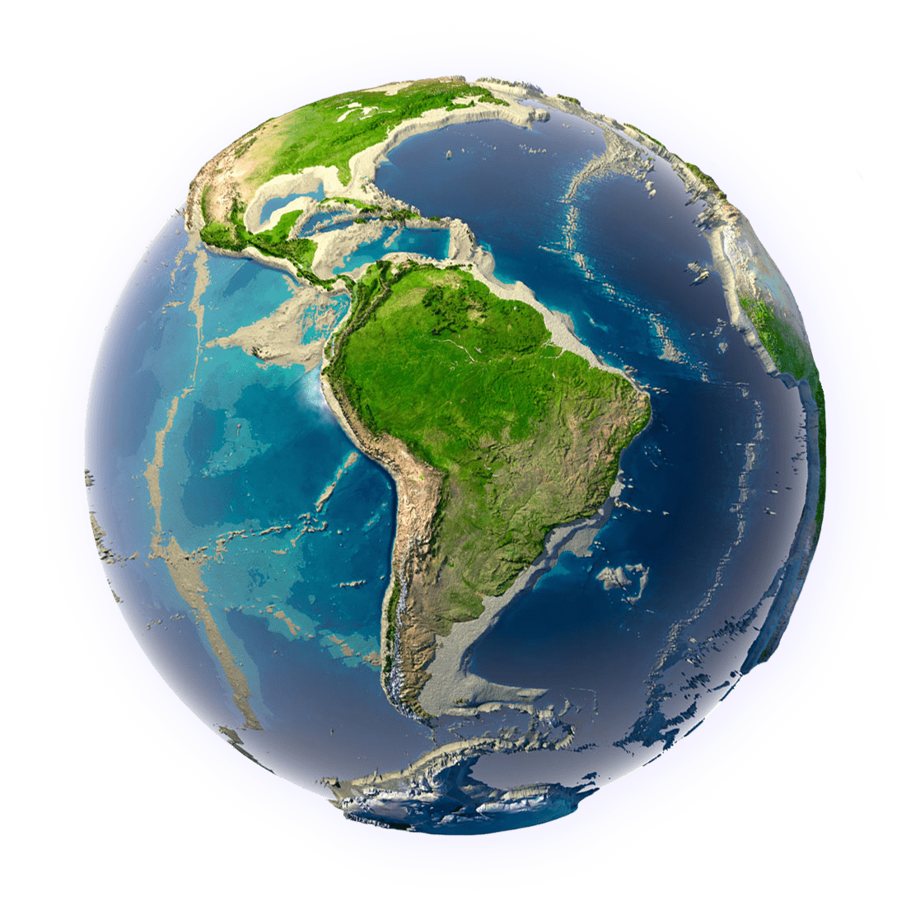

Ecologia
Prof. Nathália de Andrade
Conceito de Ecologia
Palavra que deriva do grego “oikos” significa casa e “logos” significa estudo. Assim podemos dizer que a ecologia é o estudo do meio onde vivemos. É o estudo das relações dos seres vivos entre si e com o meio ambiente e as conseqüências dessas relações.
- Organismo: Indivíduo que é capaz de interagir com o ambiente externo;
- População: consiste em muitos organismos do mesmo tipo vivendo juntos.
- Comunidade: populações de diferentes tipos que vivem no mesmo lugar
- Ecossistema: Conjunto formado pela comunidade (meio biótico) e o ambiente físico (meio abiótico). Ex: Lagoa, Deserto, Floresta, etc.;
- Biosfera: Conjunto de todos os ecossistemas do planeta; corresponde à porção da Terra onde existe vida. Todos os ambiente e organismos da Terra! A Biosfera interage com a Atmosfera, Hidrosfera e Litosfera.
Todos direitos reservados

Copyright © 2022